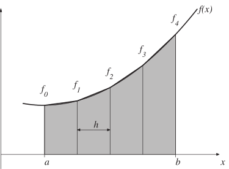

Long description: Ch25comp4trappicJPW

Alt text: The image displays a function \(f(x)\) plotted on a coordinate plane, with rectangles labeled \(f_0\) through \(f_4\) under the curve, illustrating a Riemann sum approximation.
This description was generated by AI and has not been verified by a human. If you spot an error, please use the feedback link below.
- The image shows a curve representing a function, labeled \(f(x)\), plotted on a two-dimensional coordinate system with the horizontal axis labeled \(x\) and the vertical axis representing the function's value.
- The region under the curve, between the vertical lines corresponding to \(x=a\) and \(x=b\), is approximated by a series of adjacent rectangles.
- Five distinct, shaded rectangles are drawn beneath the curve, labeled sequentially as \(f_0\), \(f_1\), \(f_2\), \(f_3\), and \(f_4\).
- The width of the second rectangle, \(f_1\), is indicated by a horizontal segment labeled \(h\), suggesting that all rectangles have this uniform width.
- The starting point for the rectangles is at \(x=a\), and the ending point is at \(x=b\).
- The rectangles illustrate the concept of approximating the area under a curve using a sum of rectangular areas, characteristic of a Riemann sum.